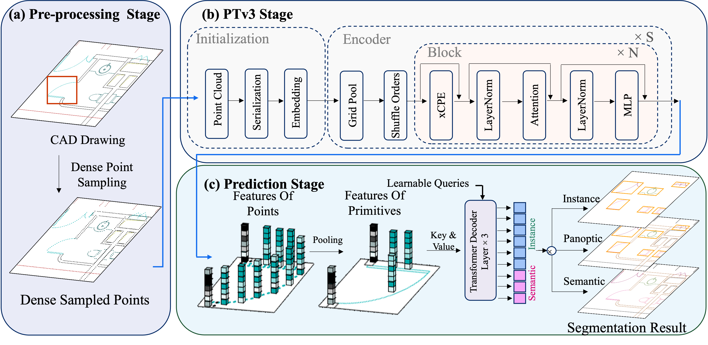
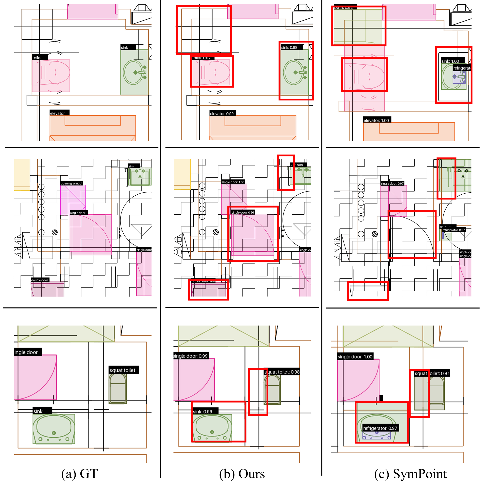
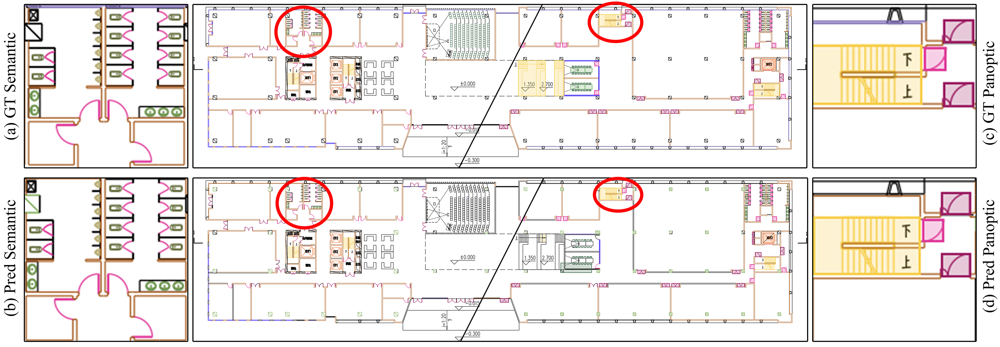
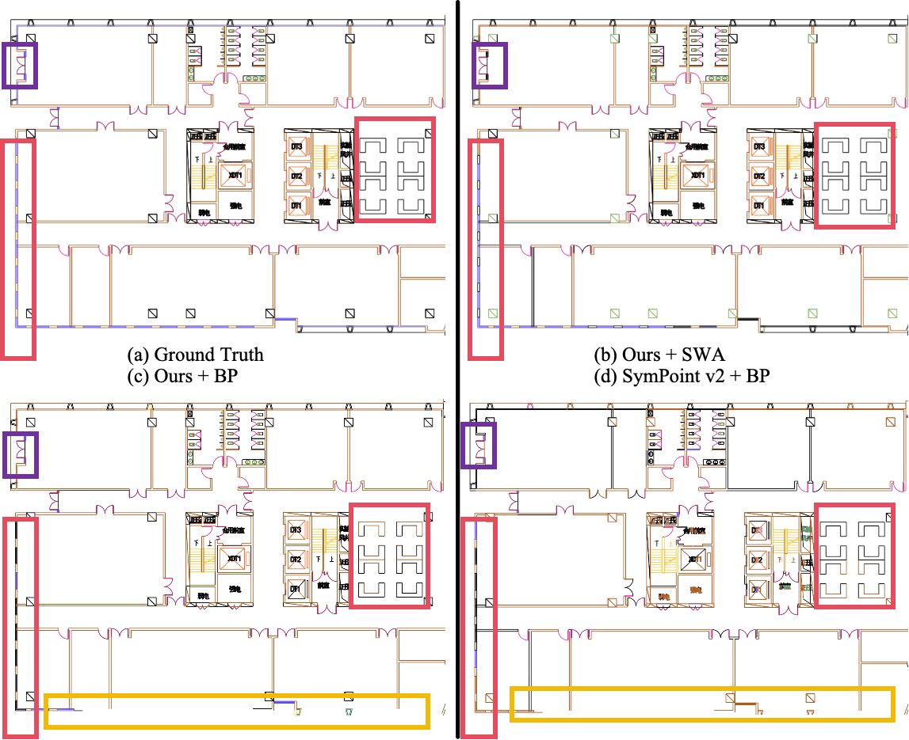
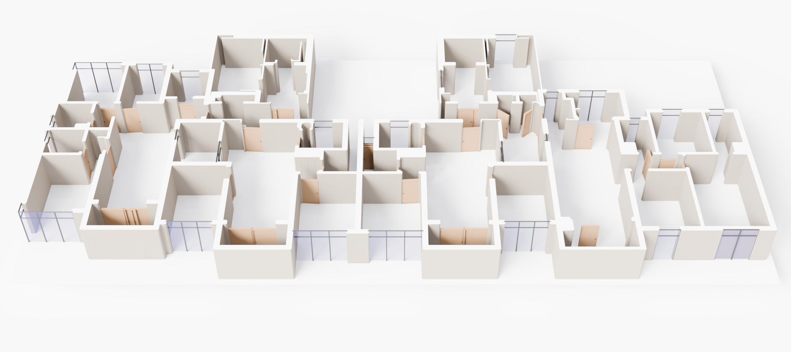

Abstract
We introduce CADSpotting, an effective method for panoptic symbol spotting in large-scale architectural CAD drawings. Existing approaches often struggle with symbol diversity, scale variations, and overlapping elements in CAD designs, and typically rely on additional features (e.g., primitive types or graphical layers) to improve performance. CADSpotting addresses these challenges with a primitive-agnostic, coordinate-only dense sampling representation: each CAD primitive is converted into densely sampled 2D points embedded in 3D with z = 0, and a point-cloud backbone learns features without explicit primitive-type or layer attributes. To enable accurate segmentation in large drawings, we further use sliding window aggregation (SWA), which combines weighted voting and sparse non-maximum suppression (NMS) to merge local predictions across overlapping windows. Moreover, we introduce LS-CAD, a large-scale dataset comprising 45 finely annotated complete floorplans, each covering approximately 1,000 m2 or more. LS-CAD complements existing large-quantity CAD datasets by focusing on physically extensive real-world layouts with thousands to tens of thousands of primitives per drawing. Experiments on FloorPlanCAD and LS-CAD demonstrate that CADSpotting achieves strong performance compared to existing methods. We also showcase its practical value in enabling automated parametric 3D interior reconstruction directly from raw CAD inputs.
Pipeline Overview

FloorPlanCAD Results

LS-CAD and Large-Scale Results
LS-CAD contains 45 complete floorplans from extensive buildings such as campuses and office complexes. Each drawing covers at least 1,000 m2, with representative samples containing approximately 2,900 to more than 28,000 primitives. The dataset follows the fine-grained FloorPlanCAD annotation standard and is available from the corresponding author upon reasonable request.


Automated 3D Interior Reconstruction



CADSpotting's instance-level segmentation and primitive positions provide spatial parameters for walls, doors, and windows. Door positions, orientations, and pivot points are recovered from geometric relationships between arcs and lines; window positions are derived from their instances; and wall contours are extracted from closed polygons formed by adjacent wall primitives. These parameters drive a Blender-based parametric reconstruction pipeline that uses reusable wall, door, and window assets to generate structurally accurate 3D interiors from raw CAD inputs within minutes.
BibTeX
@article{yang2024cadspotting,
title = {CADSpotting: Robust Panoptic Symbol Spotting on Large-Scale CAD Drawings},
author = {Yang, Fuyi and Mu, Jiazuo and Zhang, Mingqian and Zhang, Yanshun and
Zhang, Junxiong and Xu, Lan and Zhang, Yingliang},
journal = {arXiv preprint arXiv:2412.07377},
year = {2024}
}